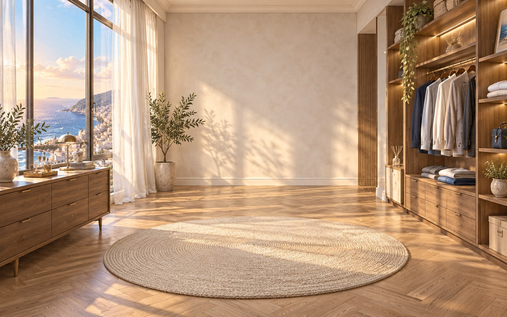

THE FITTING ROOM

A LITTLE GUIDE
左侧选择发型、内搭、外套、裤装和鞋履；右侧可以换色、微调位置，或暂时隐藏单个图层。头部、颈部与手臂均可从图层列表单独选择。底部五套造型可以一键应用。
「保存造型」会保存在当前浏览器。打开「页面读取示例」可以查看另一个页面实时读取到的完整人物。跨设备使用请导出配置或分层 PNG 包。
自定义素材需使用透明 PNG。单件素材选择「适配当前部件」，与人物等大的 948 × 1659 图层选择「完整画布对齐」。